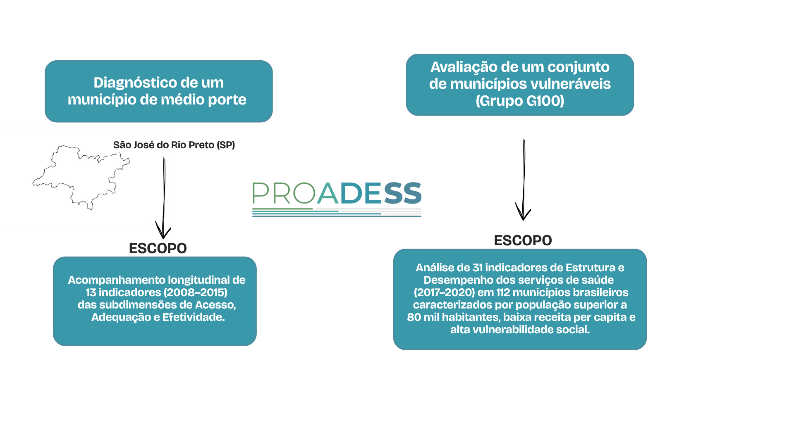

Módulo 2 | Aula 4
Desempenho dos Serviços de Saúde
Exemplos práticos de avaliação de desempenho de serviços de saúde
A operacionalização de um modelo multidimensional de avaliação de desempenho do sistema de saúde — como a matriz do Proadess ou os modelos internacionais apresentados — envolve o desafio de traduzir conceitos complexos e transversais (como equidade, efetividade, acesso e eficiência) em um conjunto de indicadores mensuráveis e viáveis. A avaliação através de painel de controle (dashboard) enfrenta quatro grandes desafios:
Exemplo prático: a matriz Proadess na avaliação municipal do SUS
As matrizes de avaliação de desempenho de sistemas de saúde possibilitam análises em diferentes contextos territoriais. Os dois estudos a seguir são exemplos práticos de como a matriz conceitual do Proadess pode ser operacionalizada no nível municipal.

Fonte: CVF, a partir dos autores.
Explore os estudos
Leia os artigos abaixo:
Diagnóstico de um município de médio porte
São José do Rio Preto/SP
Escopo: Acompanhamento longitudinal de 13 indicadores (2008–2015) das subdimensões de Acesso, Adequação e Efetividade.
Avaliação de um conjunto de municípios vulneráveis
Grupo G100
Escopo: Análise de 31 indicadores de Estrutura e Desempenho dos serviços de saúde (2017–2020) em 112 municípios brasileiros caracterizados por população superior a 80 mil habitantes, baixa receita per capita e alta vulnerabilidade social.
Depois da leitura de ambos os artigos, reflita:
indeterminate_question_box Quando a indisponibilidade de dados resulta na exclusão de subdimensões como Segurança do paciente e Respeito aos direitos das pessoas na escala municipal, que aspectos essenciais do cuidado ficam "invisíveis" na avaliação do SUS?
indeterminate_question_box Diante da ausência de parâmetros normativos consensuados para diversos indicadores de saúde no Brasil, como podemos definir o que é um desempenho "satisfatório" ou "insatisfatório" sem incorrer em julgamentos arbitrários?
indeterminate_question_box Considerando que a avaliação de desempenho deve servir para aprimorar a gestão do SUS, como um gestor municipal poderia utilizar os diagnósticos produzidos por esses estudos para reorientar a alocação de recursos financeiros e humanos?
indeterminate_question_box De que forma o eixo transversal da Equidade se evidencia quando observamos as disparidades intra e intermunicipais reveladas por esses dois artigos?
Ao longo deste módulo, exploramos as múltiplas dimensões da avaliação do desempenho dos sistemas de saúde, tendo como marco conceitual e metodológico o Projeto de Avaliação do Desempenho do Sistema de Saúde (Proadess). A avaliação deve orientar a tomada de decisão para transformar dados e indicadores em melhorias na gestão das políticas e programas de saúde. Na próxima aula, iremos conhecer ferramentas de consulta aos indicadores para avaliação do sistema de saúde.